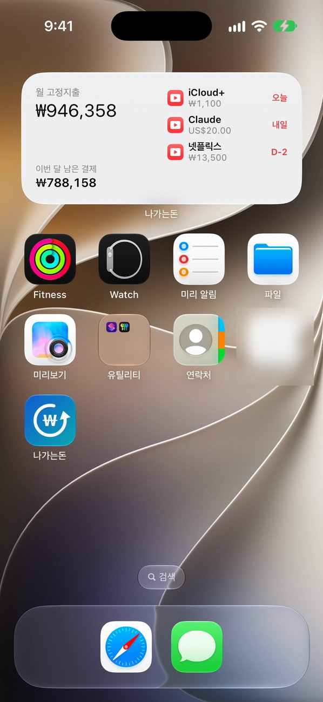

매달 빠져나가는 돈,
전부 얼마인지 아세요?
구독료·통신비·월세·보험료. 나가는돈은 정기적으로 나가는 고정지출만 모아 한눈에 보여 주는 iPhone 구독 관리 앱입니다. 매일 기록할 필요 없이 한 번만 등록하면 됩니다.
핵심 정보
- 무엇인가
- 나가는돈(영문명 Outgo)은 구독료·통신비·월세·보험료 같은 고정지출과 정기결제를 모아 매달 합계를 보여 주는 iPhone 앱입니다.
- 가격
- 10개 항목까지 무료입니다. 나가는돈 Pro는 앱 안에서 한 번만 결제하는 4,400원 상품이며 구독이 아닙니다.
- 개인정보
- 회원가입·서버·광고·추적이 없습니다. 데이터는 iPhone 안에만 저장되고 은행 계좌나 카드를 연결하지 않습니다.
- 지원 기기
- iOS 17 이상의 iPhone. 앱은 한국어와 영어를 지원합니다.
- 해외 결제
- 달러 등 외화 구독은 그 통화로 등록합니다. 합계는 Frankfurter가 제공하는 유럽중앙은행 기준환율로 원화 환산하며, 환율을 직접 정할 수도 있습니다.
- 만든 사람
- 하이아이오(hiio)의 1인 개발자 HUNCHANG CHO가 만들었습니다.
주요 기능
월급 전까지 나갈 돈
다음 월급날 전에 얼마가 더 빠져나가는지 미리 보여 줍니다. 매월, 2주, 매주 급여 모두 지원합니다.
홈 화면·잠금 화면 위젯
앱을 열지 않아도 월 고정지출 합계와 다음 결제 D-day, 이번 달 남은 결제를 홈 화면에서 바로 확인할 수 있습니다.
어떤 결제 주기든 등록
매주·매월·매년은 물론 3개월마다 내는 돈까지. 연 단위 결제는 월 금액으로 환산해 고정비 합계에 넣습니다.
해외 결제도 원화로 합산
ChatGPT, Claude처럼 달러로 결제되는 구독은 달러 그대로 등록하세요. 합계는 매일 갱신되는 유럽중앙은행 기준환율로 원화 환산하고, 카드사 환율로 직접 고정할 수도 있습니다.
놓치지 않는 결제일 알림
결제 당일이나 1·3·7일 전 오전 9시에 알려 줍니다. 항목마다 따로 정할 수 있고, Pro에서는 알림 시각을 직접 고릅니다.
내 기기에만 저장
계좌나 카드를 연결하지 않고 로그인도 없습니다. 입력한 내용은 기기 밖으로 나가지 않습니다. Pro에서는 Face ID로 앱을 잠글 수 있습니다.
이런 분께 맞습니다
- 구독 서비스를 여러 개 쓰는데 합쳐서 얼마인지 모르겠다.
- 다음 월급 전에 월세·통신비·보험료가 통장에서 빠져나가도 괜찮은지 미리 알고 싶다.
- 가계부 앱을 써 봤지만 매번 기록하기 번거로워서 그만뒀다.
- 앱에 은행 계좌를 연결하고 싶지 않다.
화면 미리보기



가격
기본 기능은 무료이고 10개 항목까지 등록할 수 있습니다. 나가는돈 Pro는 4,400원을 한 번만 결제하면 되며(구독 아님) 항목 무제한, Face ID 잠금, 알림 시간 선택, CSV 내보내기가 열립니다.
지원
사용 중 문제가 있거나 제안이 있으면 메일로 알려 주세요. 보통 영업일 기준 2일 안에 답장합니다.
자주 묻는 질문
무료인가요?
네, 10개 항목까지 무료입니다. 나가는돈 Pro는 4,400원 한 번 결제로 항목 무제한, Face ID 잠금, 알림 시간 선택, CSV 내보내기를 엽니다. 구독형 결제가 아닙니다.
회원가입이 필요한가요?
아니요. 회원가입도 로그인도 없습니다. 앱을 열고 바로 첫 항목을 등록하면 됩니다.
개발자가 내 데이터를 볼 수 있나요?
아니요. 입력한 내용은 iPhone 안에만 저장되고 서버로 보내지 않습니다. 광고와 추적도 없습니다. 환율표를 받아 올 때만 인터넷에 접속하며, 이때 입력한 데이터는 보내지 않습니다. 앱을 지우면 데이터도 함께 지워집니다.
은행 계좌를 연결해야 하나요?
아니요. 항목을 직접 한 번만 입력하면 됩니다. 계좌나 카드 정보를 묻지 않습니다.
달러로 결제되는 해외 구독도 관리할 수 있나요?
네. ChatGPT, Claude처럼 달러로 결제되는 구독은 달러 그대로 등록하세요. 매일 갱신되는 유럽중앙은행 기준환율로 원화 환산해 합계에 넣고, 카드사 환율에 맞춰 직접 고정할 수도 있습니다.
어떤 iPhone에서 쓸 수 있나요?
iOS 17 이상이 설치된 iPhone이면 됩니다. 앱은 한국어와 영어를 지원합니다.
기기를 바꾸면 어떻게 옮기나요?
iPhone 백업(iCloud 또는 컴퓨터)으로 새 기기에 복원하면 함께 옮겨집니다. Pro에서는 CSV로 내보낼 수도 있습니다.
알림이 오지 않아요.
iPhone 설정 → 알림 → 나가는돈에서 알림 허용이 켜져 있는지 확인해 주세요. 알림은 설정한 날 오전 9시에 오며, Pro에서는 정한 시각에 옵니다.
Pro를 샀는데 잠금이 풀리지 않아요.
앱의 설정 → 구매 복원을 눌러 주세요. 구매할 때 쓴 Apple 계정으로 로그인되어 있어야 합니다.
환불은 어떻게 하나요?
Apple이 결제를 처리합니다. reportaproblem.apple.com에서 요청할 수 있습니다.